Residue Theorem¶
The Residue Theorem says that a contour integral of an analytic function
over a closed curve (loop) is equal to the sum of residues
 of the function at all singularities inside the loop:
of the function at all singularities inside the loop:
Residue is defined as the contour integral around  divided by
divided by  :
:
and it is equal to the coefficient of in the
Laurent series of  around the point , as can be easily calculated:
around the point , as can be easily calculated:
where we used the result of the following integral (we integrate over the curve
 ,
,  , so ):
, so ):
Computation of Residues¶
One has to calculate the coefficient in the Laurent series. One way to
do that is to write as:
where  is analytic in the vicinity of , e.g. has a pole of
order
is analytic in the vicinity of , e.g. has a pole of
order  at . Then:
at . Then:
in particular for :
for  :
:
has a pole of order 1 at ,  is analytic at :
is analytic at :
 , but and is analytic at :
, but and is analytic at :
Useful Formulas¶
Jordan’s Lemma¶
For estimating integrals over semicircles  (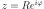,
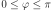), we can use the following estimates:
(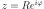,
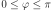), we can use the following estimates:
(In the first case the integration path can be extended to the full circle if
needed ( ), in the second case the semicircle is the maximum
path. Also if
), in the second case the semicircle is the maximum
path. Also if  , we need to integrate over the lower semicircle.)
These formulas can be used to make sure the integral over the semicircle goes to
zero as 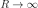. Intuitively speaking, in the first case must
vanish faster than
, we need to integrate over the lower semicircle.)
These formulas can be used to make sure the integral over the semicircle goes to
zero as 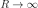. Intuitively speaking, in the first case must
vanish faster than  (e.g. 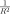 is ok), in the second case
it’s enough if just goes to 0 (no matter how fast).
(e.g. 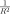 is ok), in the second case
it’s enough if just goes to 0 (no matter how fast).
The estimates can be proved easily:
and
where we use the following useful estimate for the integral (valid for ):
Other¶
Sometimes it is useful to integrate over the arc , , and let
 at the end. If the function is analytic, the result is
at the end. If the function is analytic, the result is  . If the
function has a pole of order 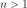, the result is infinity, unless it’s a full
circle (in which case the result is 0). The remaining case is if the function
has a pole of order one, e.g. it can be written ( is analytic at ):
. If the
function has a pole of order 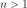, the result is infinity, unless it’s a full
circle (in which case the result is 0). The remaining case is if the function
has a pole of order one, e.g. it can be written ( is analytic at ):
Then:
Complex Substitution¶
When substituting in integrals, as long as we just substitute for real
functions, we use the regular substitution theorem, e.g. 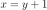 ( can
be a complex function):
can
be a complex function):

if, on the other hand, we substitute for complex functions, e.g.  :
:
then the first two integrals in the left hand side are equal, however the integral on the right hand side is over a different integration path and we need to use the Residue Theorem to relate those integrals, e.g. in general the two integrals on the LHS and the integral on the RHS are not equal. However the idea is that the integral after the substitution (and changing the limits, e.g. the integration path) is easier to evaluate, so the substitution guides us which integration path to choose for the Residue Theorem.